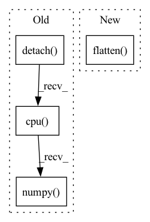

Pattern ID :1696

Before Change
observation, deterministic, return_log_prob=True
)[-1]
logits_pi = logits_pi.detach().cpu().numpy().flatten()
logits_adv = logits_adv.detach().cpu().numpy().flatten()
return action, log_pi, adv_log_pi, logits_pi, logits_adv
return action, log_pi, adv_log_pi
After Change
scale = actor_distrib.scale.detach().cpu().numpy().flatten()
params_pi = np.concatenate([mean, scale], -1)
mean = adversary_distrib.mean.detach().cpu().numpy().flatten()
scale = adversary_distrib.scale.detach().cpu().numpy().flatten()
params_adv = np.concatenate([mean, scale], -1)
return action, log_pi, adv_log_pi, params_pi, params_adv
def compute_values(self, observations: Observation) -> np.ndarray:
In pattern: SUPERPATTERN
Frequency: 3
Non-data size: 4
Instances
Fragment ID: 8140604
Project Name: yfletberliac/adversarially-guided-actor-critic
Commit Name: 4958ecb8ca6e7e344852f7aa9fc8668cd8cd074b
Time: 2021-07-07
Author: cibeah.cb@gmail.com
File Name: agac_torch/agac/agac_ppo.py
M Class Name: PPO
N Class Name: PPO
M Method Name: select_action(3)
N Method Name: select_action(4)
M Parent Class:
N Parent Class:
M File Name: agac_torch/agac/agac_ppo.py
N File Name: agac_torch/agac/agac_ppo.py
M Start Line: 115
M End Line: 138
N Start Line: 121
N End Line: 146
'>
Before Change
// TODO: clip grad norm?
// nn.utils.clip_grad_norm_(self.policy.parameters(), self.max_grad_norm)
self.policy.optimizer.step()
print(explained_variance(return_batch.numpy()[:, 0], values[:, 0].detach().cpu().numpy()))
def learn(self, total_timesteps, callback=None, log_interval=100,
eval_freq=-1, n_eval_episodes=5, tb_log_name="PPO", reset_num_timesteps=True):
After Change
policy_loss_2 = advantage * th.clamp(ratio, 1 - self.clip_range, 1 + self.clip_range)
policy_loss = -th.min(policy_loss_1, policy_loss_2).mean()
// value_loss = th.mean((return_batch - value)**2)
value_loss = F.mse_loss(return_batch, values.flatten())
entropy_loss = th.mean(entropy)
loss = policy_loss + self.ent_coef * entropy_loss + self.vf_coef * value_loss
// loss = policy_loss
'>
Fragment ID: 8140623
Project Name: dlr-rm/stable-baselines3
Commit Name: fe8b415cbf2025ee1e9c36b89b2f6e36c83ae5d8
Time: 2019-09-19
Author: antonin.raffin@ensta.org
File Name: torchy_baselines/ppo/ppo.py
M Class Name: PPO
N Class Name: PPO
M Method Name: train(3)
N Method Name: train(3)
M Parent Class: BaseRLModel
N Parent Class: BaseRLModel
M File Name: torchy_baselines/ppo/ppo.py
N File Name: torchy_baselines/ppo/ppo.py
M Start Line: 128
M End Line: 141
N Start Line: 128
N End Line: 128
'>
Before Change
pred = torch.ones_like(scores)
pred[scores <= .5] = 0
y_pred = pred.cpu().numpy().flatten()
auc_scores = scores.detach().cpu().numpy().flatten()
res = {
"accuracy": accuracy_score(y_true, y_pred),
After Change
if y.dim() == 1:
y_true = y.cpu().numpy().flatten()
else:
y_true = torch.argmax(y, dim=-1).cpu().numpy().flatten()
pred = torch.argmax(scores, dim=-1)
y_pred = pred.cpu().numpy().flatten()
'>
Fragment ID: 8140599
Project Name: makgyver/gossipy
Commit Name: 31a93a404f8bfba3869c5eb733962a438f4806f0
Time: 2021-08-29
Author: mak1788@gmail.com
File Name: gossipy/model/handler.py
M Class Name: TorchModelHandler
N Class Name: TorchModelHandler
M Method Name: evaluate(2)
N Method Name: evaluate(2)
M Parent Class: ModelHandler
N Parent Class: ModelHandler
M File Name: gossipy/model/handler.py
N File Name: gossipy/model/handler.py
M Start Line: 93
M End Line: 103
N Start Line: 99
N End Line: 123